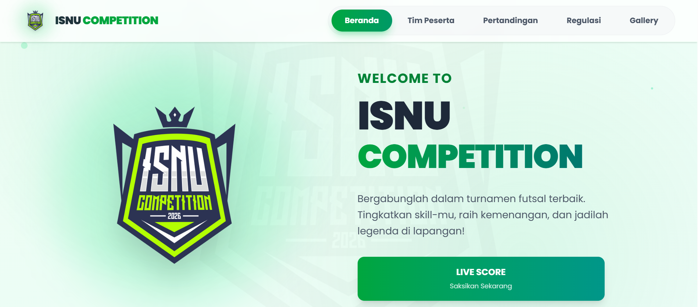
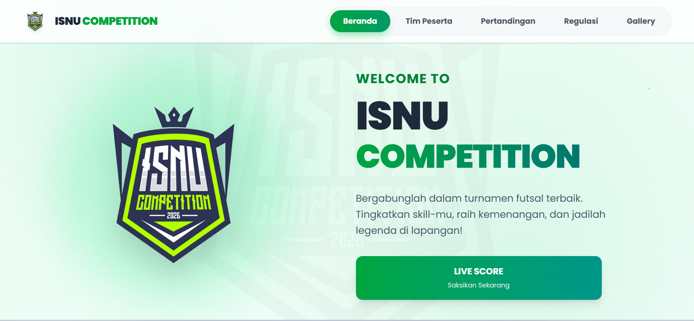
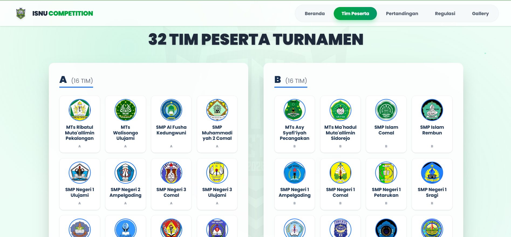
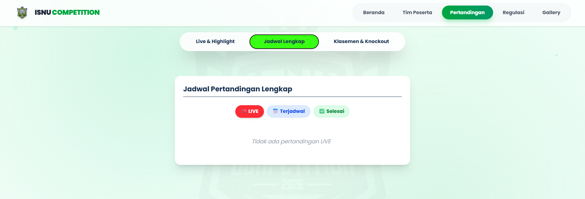
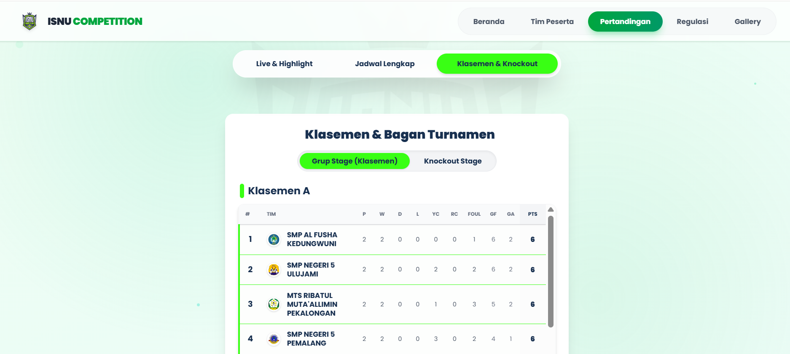
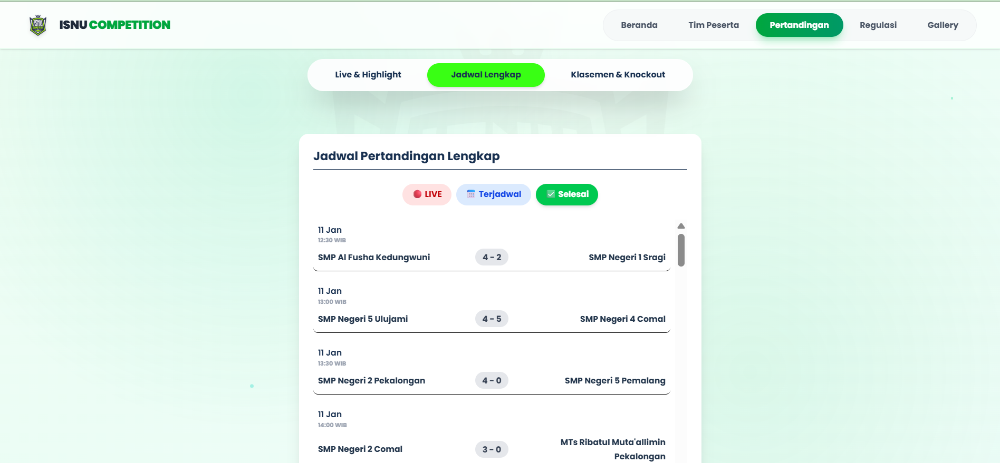
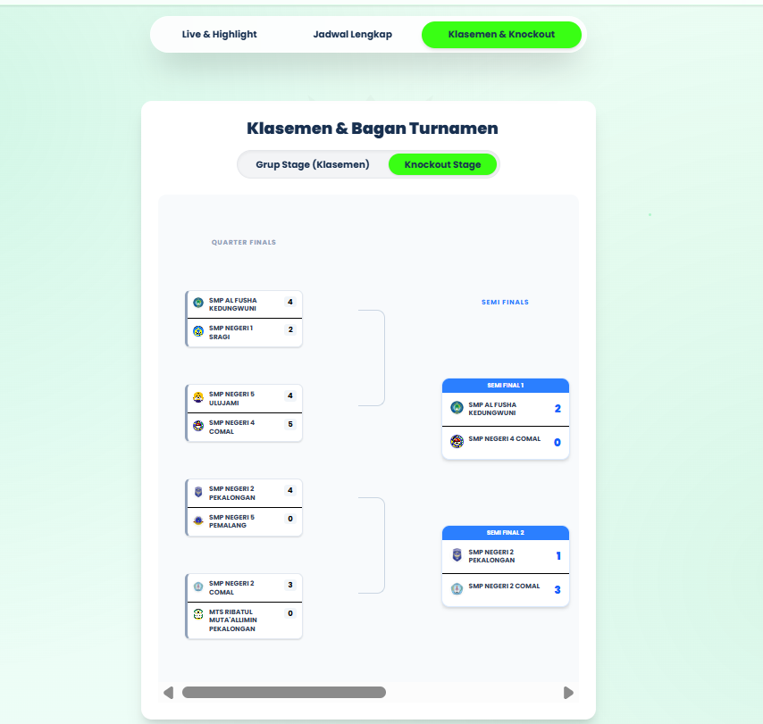

Platform manajemen turnamen futsal dengan fitur daftar tim, penjadwalan otomatis, dan sistem poin real-time untuk organisasi olahraga.

Mengelola turnamen futsal secara manual sangat rumit dan memakan waktu. Masalah yang dihadapi:
Platform yang mengotomatisasi seluruh proses manajemen turnamen:
Jadwal pertandingan dirilis
Pertandingan dimulai dan hasil diperbarui
Akses dasbor admin
Tinjau pendaftaran tim
Buat jadwal pertandingan otomatis
Input skor pertandingan
Input hasil pertandingan
Sistem pendaftaran tim yang mudah dengan verifikasi admin.
Penjadwalan pertandingan otomatis berdasarkan jumlah tim dan format turnamen.
Klasemen yang selalu diperbarui setelah setiap pertandingan.
Laporan pertandingan detail dengan statistik pemain dan hasil akhir.






Tantangan: Membuat penjadwalan yang efisien untuk semua tim.
Solusi: Implementasi logika dengan optimasi untuk menghindari konflik jadwal.
Tantangan: Memperbarui klasemen secara real-time.
Solusi: Menggunakan database triggers dan caching untuk performa optimal.
Tantangan: Antarmuka yang responsif untuk berbagai ukuran layar.
Solusi: Menggunakan sistem grid Tailwind CSS dan media query CSS khusus.
Tantangan: Sistem login untuk admin.
Solusi: Implementasi manajemen sesi dan hashing kata sandi dengan bcrypt.
Tantangan: Optimasi query untuk performa dengan data besar.
Solusi: Indexing strategis dan optimasi query dengan analisis EXPLAIN.